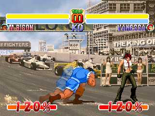
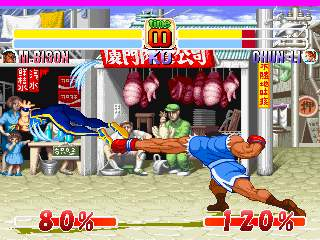

ex skill

super jump - ↓ 모으고 ↑ jump or a+b+c
역시 이번에도 수퍼점프는 건재... 앞으로도 넣을거다...

moving rush - ← x+a or → x+a
CvsS에서 추가된 이동기...이것에 연속으로 기술을 넣을까도 고민했지만,
왠지 사기캐러가 될듯해서 보류중...(사실은 귀찮다.)

zero counter- guard 중 x+a, y+b, z+c
무적의 제로 카운터...기게이지가 소모된다는 단점이 있지만, 리버설용으로 쓰면
아주 유효적절한 기술...